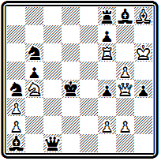
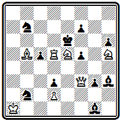

№ 000
А. Мэкензи Пражский конкурс 1898 I приз
Мат в 3 хода
Следует отметить, что в силу большого своеобразия принципов чешской школы, о которой речь пойдет в одной из следующих глав, иностранцам всегда было чрезвычайно трудно завоевать здесь высшие отличия. Известны буквально единичные случаи этого рода, первым из которых явился успех Мэкензи. Вступительный ход 1. Фh3 создает угрозу 2. Фf5. Первый правильный мат получается после тихих ходов ферзя в вариантах 1… g4 2. Фh6 (с угрозой 3. Лh5#) и 1... f2 2. Ф:g3 (с угрозами 3. Фс3# и 3. Ф:f2#)— в обоих случаях на ход 2... Кр:с5 следует правильный мат 3. Kd7#, в котором белый ферзь атакует поле d6. Два других правильных мата осуществляются в вариантах 1... Кр:с5 2. Kd7+ Кр:d6 3. Се5# и 1... Кре3 2. Kd5+ Кр:е4 3. Фh7#.
Правильными матами в главных вариантах завершается и композиция № 000, но основой ее содержания являются не сами эти маты, а приводящая к ним игра. Оба главных варианта построены на отвлечении черных ладей и осуществляются красивыми ходами с выключением белой ладьи:
№ 000
А. Мэкензи «Нью-Йорк сан» 1898 I приз

Мат в 3 хода
1. Са4 Ла:d1 2. Сb5 Кр:d5 3. Cd3# и 1... Лf:d1 2. Кb5 Кр:d5 3. Kd6#; угроза 2. Фс2+, на 1... Л:а4 решает 2. Ф:f1.
Позднее Мэкензи создал улучшенную редакцию этой задачи -
А. Мэкензи сборник «Шахматная лирика» 1905 (версия)

Мат в 3 хода
1. Фа6 Л:а6 2. Ке6, 1... С:а6 2. Се6. Примечание: проходит еще - 1. С:b5!(2. Сe2#) gf 2. ef ~ 3. Сe2#. Это можно грубовато исправить добавлением черной пешки a6
В заключение рассмотрим проблему № 000, где также есть два правильных мата, но игра содержит новые нюансы. В начальной позиции обращает внимание загромождение пятой горизонтали белыми и черными фигурами. Казалось бы, ладья а5 безнадежно далека от поля битвы, тем более эффектно ее неожиданное активное участие в обоих идейных вариантах:
№ 000
А. Мэкензи «Брайтон сосайети» 1898 I приз

Мат в 3 хода
1. Фb4 сb 2. С:b5 Кр:d5 3. Сс4# и 1... Кр:d5 2. Ф:с5+ Кр:c5 3. Л:b5#. В дополнительном варианте проходит еще один, уже чистый, мат на другом фланге и другой ладьей: 1... Кр:f5 2. Kf3+ Крg4 3. Л:g5#; угроза 2. Ф:е4.
В сборнике Мэкензи приведен полный список полученных им отличий. За период гг. он завоевал 100 отличий в 62 конкурсах, в том числе 21 первый приз. В гг. ему достались 94 отличия в 56 конкурсах, среди них 25 высших. По конкурсным достижениям Мэкензи смело можно назвать чемпионом мира на рубеже XIX и XX веков. В своей статье Мэкензи, помимо общих теоретических вопросов, много внимания уделял вопросам организации конкурсов и их судейства. Выявившееся к тому времени значительное расхождение стилей и вкусов сделало затруднительным присуждение. Введение коллегиальных судей мало помогало, так как получались столь значительные расхождения в оценках, что примирить их оказывалось необычайно трудно. Делались, и не раз, попытки ввести какие-то объективные критерии для оценки задач. Нередко при проведении конкурса объявлялось, что задачи будут оцениваться по шкале:
красота позиции — 6 очков,
трудность — 6,
красота идей — 6,
качество конструкции —6,
итого для совершенной задачи — 24 очка.
Плэнк и Лоус в одном из конкурсов «Бритиш чесс мэгезин» ввели еще более сложную оценочную шкалу:
красота идеи — 20 очков,
воплощение — 20,
оригинальность механизма — 10,
правильность — 10,
экономичность — 20,
трудность — 20,
общий максимум—100 очков.
Задача Мэкензи № 000, получившая в этом состязании 1 приз, набрала соответственно 14½ + 13+ 8 + 8 + 13 + 13½ — всего 70 очков. Следующие три задачи получили 63, 62½, 61½ очка. Как можно оценивать задачи с точностью до одного и даже половины очка — неясно. Практически из очковой системы ничего не вышло и выйти не могло. Задача, как произведение искусства, представляет собой единое органическое целое. Ее нельзя разложить на составные элементы, оценивать каждый из них отдельно, а затем получить общую оценку композиции как арифметическую сумму
Глава 8
НЕМЕЦКАЯ ШКОЛА
Котц и Коккелькорн. Клетт. Бергер и его книга «Шахматные задачи и искусство их составлении».
Принципы немецкой школы. Конкурсы Германского шахматного союза.
Венская группа проблемистов: Эрлин, Фейгль
Основоположником немецкой школы в задачной композиции по праву считается Конрад Байер, с творчеством которого мы уже знакомы. Однако им были только намечены принципы направления. Всестороннее развитие они получили в 70—80-х годах в работах немецких проблемистов И. Котца, К. Коккелькорна, Ф. Клетта, а окончательно сформулированы австрийским композитором И. Бергером.
Все эти авторы выступили со сборниками своих произведений, где высказали теоретические взгляды на существо и принципы составления шахматной задачи. Совпадая в основном, эти взгляды от одной работы к другой уточнялись и конкретизировались.
Иоганн Котц и Карл Коккелькорн почти с самого начала своего творческого пути выступали всегда совместно. Только некоторые теоретические и исторические работы были опубликованы отдельно И. Котцем. Их творчество продолжалось свыше полувека и сыграло большую роль в истории композиции.
Задачи раннего периода, охватывающего 1861—1868 гг., были собраны и изданы ими в 1875 г. в виде сборника «101 избранная шахматная задача» (28).
Вступительная статья открывается словами: «Нет другого искусства, в котором бы так расходились взгляды на то, что такое красиво и некрасиво, что такое хорошо и плохо, как в задачной композиции. В имеющихся работах есть уже много высказываний о принципах, и мы также считаем необходимым предпослать своим задачам короткое введение с изложением тех принципов, к которым мы пришли в результате многолетней деятельности в композиции».
Изложив общие положения о том, что «задачная комбинация должна представлять интерес для практической игры», о чистоте матов, законе экономии, Котц и Коккелькорн четко формулируют следующее положение:
«В каждой задаче должен быть составляющий ее ствол идейный вариант, которому подчинены дополнительные варианты. Если идейный вариант имеет дуаль, рушится и обесценивается вся задача».
В противоположность английским проблемистам авторы утверждают, что «неправильно оценивать задачу как сумму всех вариантов».
В этом пункте состоит одно из принципиальных отличий немецких проблемистов от английских.
Дальше дается анализ качества вариантов, роли тихих ходов и трудности решения и, наконец, проводится одно из характерных положений немецкой школы — о значении заключительного удара. «Слабое введение может быть оправдано, когда за ним идет хорошее заключение; слабый конец, даже при хорошем введении, производит плохое впечатление».
Вот, например, одно из произведений этого сборника — № 000.
№ 000
И. Котц и А. Коккелькорн 1875

Мат в 5 ходов
В главном варианте осуществляется геометрическая идея — черный король проходит далекий путь по большой диагонали, от f3 до b7, чтобы получить там красивый мат двойным шахом: 1. Л:g2 Кр:е4 2. Крс3 Кр:d5 3. Сb8 Крс6 4. Фb7+ Кр:b7 5. Лb2#. В задаче много дополнительных разветвлений, но основой является указанный главный вариант, заканчивающийся эффектной комбинацией с пожертвованием ферзя.
Задача № 000—из посылки, получившей II приз на конкурсе Британской шахматной ассоциации 1866 г.
№ 000
И. Котц и А. Коккелькорн Конкурс Британской шахматной ассоциации 1866 II приз

Мат в 5 ходов
Центральный вариант после двух ходов вступления разветвляется на две игры, содержащие жертвы ферзя и заканчивающиеся правильными матами. 1. Ке7 (с угрозой 2. Ф:d7+ и 3. Кс6#) 1... Сс8 2. Се6 Л:е6 (грозило 3. Кс6#) 3. Ф:е5+ Кр:е5(3... К:е5 4. Kf5#; 3... Л:е5 4. Кс6#) 4. f4+ Kpd6 5. K3f5# или 4... Kpd4 5. К7f5#. Черные на втором ходу могут играть 2... К:f2, тогда следует другая жертва ферзя — 3. Фd3+ К:d3 4. K7f5+ Kpe4 5. Cd5#; на 2... Кb8 решает 3. Фf3 Ф:f3 4. K7f5+. Остальные варианты содержат некоторые тонкости, но уже не являются идейными.
Отдельные произведения, вошедшие в сборник 1875 г., воплощают несколько необычные для того времени замыслы, о характере которых можно судить по миниатюре № 000.
№ 000
И. Котц и А. Коккелькорн 1875

Мат в 5 ходов
План белых прост: играя слоном, скажем, через b2-а3-f8, дать мат с поля g7. Казалось бы, этому ничего нельзя противопоставить. Но у черных находится хитрый контрплан; пока белые будут маневрировать слоном, они успеют построить пат с замурованным слоном. Надо уничтожить пешку g3. Решает только 1. Ce5 Ch1 2. С:g3 С~ 3. Cd6 ~ 4. Cf8 ~ 5. Cg7#.
Основная идея этой задачи заключается в тонкой игре черных, в которой осуществляется критический ход с последующим замурованием. Подобную игру мы видели выше, в задаче № 98 Зеебергера, но там замурование было вынужденным, инициатива его осуществления принадлежала белым. Здесь же критический маневр осуществляется черными добровольно, по собственной инициативе. В отличие от темы Зеебергера критический ход с замурованием, проводимый в защите, называется темой Клинга, впервые осуществившего эту идею в игре белых в патовом этюде.
В защитительной игре черных могут воплощаться и другие идеи. В примере № 000 -
№ 000
И. Котц и А. Коккелькорн «Нейе берлинер шахцейтунг» 1865

Мат в 4 хода
белые ходами 1. d3 и 2. Се4 намерены создать угрозы матов конем с полей с4 и g4. Единственная защита заключается в занятии ферзем поля g8, для чего необходимо увести мешающую этому ладью. 1... Лh8 и 2... Фg8— бристольское освобождение линии. Однако после 3. Сb2 черные попадают в цугцванг и получают мат на следующем ходу.
Еще сложнее замысел задачи № 000.
№ 000
И. Котц и А. Коккелькорн Конкурс Британской шахматной ассоциации 1873
Мат в 5 ходов
Напрашивается план с жертвой ферзя на f6— 1. Фd6, 2. Фf6+ и 3. Kd6#, но сразу он неосуществим, так как черные могут защищать поле f6 ферзем с а1. Надо заставить черного слона закрыть главную диагональ: 1. Фс7, создавая угрозу 2. Kd6+ Kpf6 3. Фd8+ Kpg7 4. Фе7+ Кр:g8 5. Фf7#. Для защиты черные вынуждены играть слоном, чтобы освободить королю поле h8, и притом, памятуя об основной угрозе белых, в угол — 1... Ca1, оставляя диагональ свободной для ферзя. Белые, естественно, не могут еще играть 2. Фd6 из-за 2... Фb2 и стараются «выкурить» слона из углового поля. Они пользуются тем, что, стремясь оставить открытой дорогу ферзю, слон перешел через поле с3, на котором его может выключить белая пешка 2. c3. Ввиду угрозы мата на е5 пешку приходится брать, а тогда белые осуществляют, наконец, свой основной план: 2... С:с3 3. Фd6 ~ 4. Фf6+ С:f6 5. Kd6#. Ha 2... Кр:е4 также следует 3. Фd6 К:f2 4. Фd4+. Если 1... Кр:е4, то опять решает 2. Фd6 К:f2 3. Кр:f2 Kpf5 4. Cf7. По внешним признакам эта композиция является типичным образцом немецкого стиля того времени: яркий главный вариант с тихим скрытым вступлением и финальной комбинацией (4. Фf6+), заканчивающейся правильным матом. Содержание задачи, однако, характеризуется наличием новых идей, получивших в дальнейшем название логических. В ту пору они еще не привлекли к себе внимания проблемистов, и примеры их представления остались случайными и одиночными. Только в начале XX века те же И. Котц и К. Коккелькорн в своем труде «Индийская задача» положили начало систематическому изучению логических идей, которым предстояло стать знаменем новой школы в задачной композиции.
Менее характерны для Котца и Коккелькорна (как, впрочем, и для всех немецких проблемистов XIX века) трехходовые и особенно двухходовые задачи. Сложные замыслы, которые их занимали, требовали для своего воплощения большего простора во времени.
Позицию № 000 авторы считали своей лучшей трехходовкой.
№ 000
И. Котц и А. Коккелькорн «Паламед франсэ» 1865 почетный отзыв

Мат в 3 хода
После 1. Фf5 белые грозят дать мат, жертвуя ферзя: 2. Фс5+ Ф:с5 3. Л:f4# или 2... Кр:с5 3. Лс6#. В последнем случае используется перекрытие черного ферзя королем по вертикали «с» от поля с6. Черные защищаются, переходя ферзем через с5, или, как принято выражаться, делая антикритический ход 1... Фс7. Но оказывается, что этот ход является одновременно критическим относительно поля с6 и белые могут выключить на нем черного ферзя от поля с2: 2. Лс6+ f6 3. Кс2#. Остальные варианты проще: 1... Фd1 2. Ф:f4+; 1… Крс3 2. Фd3+; 1... Лс8 2. Лс6+; 1... Kd5 2. Ф:d5+
Котц и Коккелькорн были активными пропагандистами немецкой школы. В отчетах по конкурсам, где они выступали судьями, в теоретических статьях они отстаивали свои принципы и критиковали чужие. Как композиторы Котц и Коккелькорн оказались менее активными. 50 избранных задач, составленных посте выхода их первого сборника, увидели свет в статье, помещенной в юбилейном сборнике Мюнхенского академического шахматного клуба (29).
Творчество другого видного немецкого проблемиста Филиппа Клетта ограничено XIX веком. После выхода сборника 112 задач, изданного им в 1878 г., он составил только 12 новых произведений. Они вместе с 12 переработками старых задач были помещены в статье, посвященной Клетту в упомянутом мюнхенском сборнике.
Сборник Клетта «Шахматная задача» (30) содержит большое введение, излагающее взгляды автора на основные принципы задачной композиции. Особенно много внимания Клетт уделяет определению и анализу содержания задачи.
«Внутреннее содержание задачи,— пишет он,— состоит в комбинации, то есть цепи идей и заключений, которые с неизбежной последовательностью, развиваясь друг из друга по нормам шахматных законов, приводят к требуемому конечному результату - мату». Комбинация должна быть правильной, иметь единственное решение в указанное число ходов. «Ценность комбинации обусловливается, с одной стороны, ее трудностью, а с другой — красотой».
Трудность комбинации заключается в тонкости, скрытости, глубине, остроумии замысла. Трудность зависит от характера ходов. Хорошо, когда ходы делаются далеко от их цели — короля, плохо, когда атака ведется со взятием фигур. Хороши ходы с жертвами ферзя или ладьи, плохо, если белые своим ходом запирают или связывают активную черную фигуру. Шахующие ходы не оставляют выбора, труднее тихие ходы, без объявления шаха.
Красота комбинации неотделима от тонкости ее развития. В большей или меньшей степени она зависит от вступительного хода и концовки главной игры. Матовая позиция должна быть чистой и экономичной, все белые фигуры должны использоваться для достижения конечной цели - мата.
Здесь же Клетт дает анализ возможных типов правильных матов: различными фигурами, с разных полей относительно короля, со связками и т. д.
Полемизируя с английскими авторами, Клетт пишет, что «теория дуалей — это не что иное, как следствие неправильного взгляда на природу задачи»; принятие ее означало бы смерть задачного стиля, разрабатывающего глубокие, содержательные комбинации, она немыслима для четырехходовок.
Интересна заключительная общая характеристика шахматной композиции: «Часто и не без основания шахматную задачу называют поэзией шахмат... Шахматная задача — это поэтическая математика или математическая поэзия».
Еще более отчетливо творческие принципы Клетта раскрываются в его практике.
Задача № 000— одна из лучших трехходовок Клетта — построена на цугцванг.
№ 000
Ф. Клетт 1878
Мат в 3 хода
Сразу играть ферзем на b2 нельзя, так как черный король уходит через f6. Но когда черный слон, вынужденный двигаться, отнимет поле f6 у своего короля, этот ход решит: 1. Фа3 С:f6 2. Фb2 с двумя правильными матами: 2... Kpd5 3. Фb5# и 2... С~ 3. с4#. На 1... Cg7 или 1... Kpd5 следует 2. Фb4, 1... Кр:f6 2. Ф:d6+.
Пример № 000 интересен, как и предыдущий, тонкими маневрами ферзя.
№ 000
Ф. Клетт Конкурс решений в Дюссельдорфе 1876

Мат в 4 хода
Белые нападают на слона f3, создавая угрозу его взятия — 2. Ф:f3 gh 3. Фf4+. Но какое из полей f1, f2, е3 или g3 выбрать для первого хода? Два последних отпадают, так как слон просто уйдет из-под удара. Надо становиться в засаду, чтобы после ухода слона грозить матом с f8. Выбор из двух почти равноценных полей f1 или f2 определяется вариантом 1... gh. На этот ход надо давать шах ферзем по диагонали c1-h6. При 1. Фf1 возможно только 2. Фс1+ и на 2... g5 мата не оказывается (3. Фb2 е5). В случае же 1. Фf2 белые могут после 1... gh давать шах 2. Фd2(е3)+ и на 2... g5 продолжать 3. Фd4 е5 4. Фd6# или 3... g4 4. Фg7#, с двумя правильными матами. Центральный вариант получается при защите 1... е5. Угроза опровергнута, новой создать нельзя, но белые ставят черных в положение цугцванга тонким ходом 2. Фf1, подготавливающим на 2... с5 эффектный ответ с жертвой ладьи и красивым далеким матующим ходом - 3. Л:h5+ gh 4. Фа6#. На 2... gh проходит 3. Фс1+ g5 4. Ф:с6#.
Сложное начальное положение задачи № 000, близкое к позиции из практической партии, не дает никаких указаний относительно пути решения.
№ 000
Ф. Клетт «Лейпцигер шахцейтунг» 1875

Мат в 4 хода
Стесненное положение черного короля наводит на мысль матовать его здесь же, на е6. В действительности цель достигается на b7 или f3. Первый ход 1. Ка4 создает угрозу 2. Kd4+ Kpd5 3. Лс5+. Главный вариант получается после 1... Kpd5. Теперь нельзя 2. Кb6+, так как король освободится через е4, а также 2. Кс3+ из-за 2... Кр:с6. Торопиться с ходами коня не следует, надо выждать, куда пойдет король. Парадоксальнейшее положение: ввиду выключения ладьи не проходит 2. Кс3+ но после 2. Лb1, когда ладья сама уходит с линии «с», этот ход становится угрозой. Маневр ладьи выглядит бессмысленным, но это единственный путь к цели.
На 2... Кр:с6 следует новая неожиданность — 3. Кb6 и после 3… Kpb7 красивый правильный мат 4. К:а5#, в котором сила стоявшей в засаде ладьи сказывается в поддержке коня b6. При 2... Кре4 3. Кс3+- король получает мат на f3. 1... dc 2. Кс5+. Не решает 1. Kd4+ из-за 1... Kpd5 и либо 2. Ка4 Ке6!, либо 2. Лс5+ Кре4 3. Ка4 Kd5!
Благодаря скрытости главной игры, неожиданности тихих ходов задачи Клетта очень трудны для решения, особенно его пятиходовки.
В примере № 000 белые дважды жертвуют свои ладьи.
№ 000
Ф. Клетт «Зонтагблеттер фюр шахфрейнде» 1861

Мат в 5 ходов
Нельзя выпускать короля на с6, поэтому 1. Ле6 (с угрозой 2. Kf4#) 1... Кр:е6 2. Cg4+ Kpd5 3. Cd7 (снова отнимая у короля поле с6 и грозя 4. Kf4#) 3... Л : d7 4. Ле6, вторично жертвуя ладью на том же поле, но теперь, после блокирования поля d7 черной ладьей, с матом 4... Кр:е6 5. Kf4#.
В задаче № 000 идет борьба за связывание и развязывание белого коня е7.
№ 000
Ф. Клетт 1878

Мат в 5 ходов
После 1. Фd1 грозит безразличное отступление коня е2 с последующим 3. Kf5+ и 4. Фg4# или 3. Фh5#. Черные защищаются, связывая белого коня и освобождая noле g7: 1... Лd8 2. Kf4 Cf8. Коня можно развязать, жертвуя ферзя на d6, но это надо делать с темпом, а для этого необходимо предварительно пожертвовать еще слона с целью вскрыть шестую горизонталь 3. Cg5+ fg. Теперь ферзь играет на d6 с шахом 4. Фd6+ Л:d6 5. Kf5#; при взятии слона королем 3... Кр:g5 решает 4. Фh5+. Дополнительные варианты: 1... е4 2. Кg3 Лс5 3. Кf5+ Л:f5 4. К:f5+; 1... Лb6 2. Kd4 Лb3+ 3. К:b3 и 4. Kf5+; 1... cb 2. Kg3 b1К+ 3. Kpb2 Лb6+ 4. Кра(с)1.
В главном варианте композиции № 000 осуществляется комбинация Новотного с последующей активной игрой белого короля.
№ 000
Ф. Клетт «Паламед франсэ» 1865 почетный отзыв

Мат в 5 ходов
Жертва ферзя на g4 вынуждает перекрытие слона и ладьи черных, что позволяет белому королю освободить поле f6 для коня. Для осуществления этого плана белым надо с темпом включить своего слона b3. Они достигают этого ходом 1. Кb6, перекрывающим ладью и создающим угрозу мата по восьмой линии: 2. Лd7 Kph7 3. Лd8 и 4. Лh8#. Не защищает 1... Kf2, рассчитывая дать шах с полей е4 или g4, так как конь будет взят ферзем и угроза осуществится как раз на пятом ходу. Приходится брать слона 1... Л:b6, а тогда следует идейная жертва - 2. Фg4 С:g4 3. Kpg5 C~+ 4. Крh6 и 6. Kf6# или 2... Л:g4 3. Kp:е6 Л~+ 4. Kpd6+ и 5. Kf6#. Вот для чего понадобился белый слон: последний ход короля должен быть с шахом, иначе черные могут продолжать объявлять шахи; нужно создать и дополнительную угрозу 3. С:е6+ после 2. Фg4. Примечание: после 1. Кb6 Л:b6 2. Фg4 С:g4 проходит и 3. С:e6+ С:e6 4. Kp:e6 ~ 5. Kf6#.
Не видно, как простыми средствами избежать этого. Если Вам удастся исправить задачу – присылайте на сайт.
Основная идейная игра, развертывающаяся после второго хода, осложнена дополнительным вступительным ходом —типичный прием для немецких композиторов того времени. В редких случаях (например, в приведенных выше композициях Котца и Коккелькорна) такое вступление логически связывалось с основной идеей задачи, в большинстве же случаев, как в рассматриваемой задаче Клетта, это усложнение представляло собой простое ее удлинение.
В качестве примера из последнего периода творчества Клетта приведем задачу-
Ф. Клетт «Мюнхенер нейесте нахрихтен» 1899

Мат в 5 ходов
Она содержит ряд тихих вариантов с тонкими и скрытыми маневрами белой ладьи: 1. Ла2 цугцванг; 1... Крс6 2. Лb2 Kpd5 3. g3 Кре4(е6) 4. Лd2 или 3... Крс6 4. Сс4; 1... Кр:е6 2. Лd2 Kd3 3. С:d3 Kpd7 4. Cf5+; 1... Кре4 2. Ле2+ Kpf4 3. Лg:е5 и 4. Cf2 или 2... Kpd3 3. Лg:е5 Крс3 4. Л5е3+.
Характеризуя творчество Клетта, Венинк писал: «Его идеалами были: трудность и тонкость, трудность и экономия, трудность и чистота мата в главной игре, трудность и еще раз трудность». И это справедливо. Вряд ли можно указать в истории композиции другого проблемиста, задачи которого отличались бы такой трудностью, как Клетта.
Наиболее четкое и законченное выражение принципы немецкой школы получили в творчестве Иоганна Бергера. Разносторонний шахматный деятель, автор трудов по теории шахматной игры, многолетний редактор журнала «Дейче шахцейтунг», Бергер был и выдающимся композитором.
Развивая основные положения Клетта, Бергер в книге «Шахматные задачи и искусство их составления», изданной в 1884 г. (31), сформулировал художественные требования, которым, по его мнению, должна подчиняться шахматная задача.
Два первых требования относятся к заключительной позиции в главном варианте и состоят в соблюдении чистоты и экономичности мата.
Третье правило требует, чтобы в задаче были тихие ходы. Бергер устанавливает понятие «матфюрунг», которым он обозначает заключительную серию шахующих ходов, непосредственно завершающихся матом. Такому форсированному финалу в задаче должно предшествовать введение, состоящее из тихих ходов.
Четвертое правило обусловливает число ходов введения и задачи в целом. «Введение должно находиться в гармоническом соответствии с финалом и иметь лишь такое число ходов, которое необходимо для достаточной маскировки финала или углубления идеи».
Пятое правило указывает на использование вступительного хода для скрытой подготовки идейной игры, недопустимость коротких или грубых форсированных угроз и предпочтительность цугцванга.
Шестое правило рекомендует для усложнения решения развивать сеть вариантов и создавать ложные следы; для двух - и трехходовок соблюдение этого правила совершенно обязательно.
Седьмое требование состоит в постепенном усилении ходов в процессе решения от первого хода к последнему. Этот принцип нарастающей силы наступательных ходов свидетельствует о глубоком понимании автором существа задачи и его большом вкусе.
Восьмое правило говорит о необходимости такого выбора идеи и замысла задачи, чтобы по крайней мере в главной игре было обеспечено выполнение всех сформулированных выше законов.
Девятое требование состоит в естественности начальной позиции.
Прекрасными иллюстрациями выполнения этого кодекса являются задачи самого Бергера. Кульминацией его творчества явилось десятилетие на грани 70 и 80-х годов.
Композиция № 000 интересна тем, что финал главной игры состоит из трех разветвлений, заканчивающихся правильными матами, причем два из этих вариантов содержат жертвы белого ферзя.
№ 000
И. Бергер Конкурс Средне Германского шахматного союза 1876 I приз

Мат в 4 хода
После вступления 1. Фе7 К:g1 2. Kf6 грозит мат 3. Фе4#. В зависимости от зашиты черных следуют различные заключительные ходы: 2... К:d6 3. Фе5+ Кр:е5 4. Сс3#, 2... Kd2 3. Фе3+ Кр:е3 4. Сс5# и 2... Ке5 3. d7 Кре3 4. Фс5#. Дополнительный вариант 1... Лh7 2. Кс3 Л:е7 3. Kf3+.
Задачу № 000 сам Бергер относил к числу своих содержательнейших произведений.
№ 000
И. Бергер Конкурс Западно Германского шахматного союза 1876 I приз

Мат в 4 хода
Первый ход 1. Фf4 создает угрозу 2. Ф:h6+ Кр:d5 3. Сс6+ или 2... f6 3. Kf4+. В комментариях Бергер особо подчеркивает, что задача содержит только эту угрозу. Главная игра возникает после взятия ладьи королем 1... Кр:d5, на что следует новый тихий ход 2. К:f7. Грозит 3. Фе5#, а при 2... Cd4 проходит финальная комбинация 3. Фе4+ с двумя правильными матами 3... fe 4. Kf4# и 3... Кр:е4 4. Сс6#. Если же черные защищаются, уходя королем, то следует новый правильный мат: 2... Кре6 3. Фе5+ Кр:f7 4. Фе8#. Еще один правильным мат получается в варианте 1... Се3 2. Ф:е3 f4 3. Ke4+ fe 4. Ле5#. Есть еще вариант с чистым, но неэкономичным матом: 1... Kd6 2. Л:d6+ Кре7 (2... Кр:d6 3. Kg6+) 3. Кс6+ Kpf8 4. Лd8#. 1… Ка5(d8) 2. Cd7+ Кр:d5 3. Kf6+ или 2... Кре7 3. Фh4+.
Позиция № 000 - сравнительно редкий у немецких авторов пример задачи, содержащей идейные варианты, разветвляющиеся сразу после первого хода.
№ 000
И. Бергер Конкурс в честь Андерсена 1877 I приз
Мат в 5 ходов
В первом из них 1. Фf1 С:с7 2. Фd3 С:d6 3. Ке2 С:е2 4. Фе3+ осуществляются два симметричных правильных мата слоном - 4... Kpd5 5. С:е6# и 4... Kpf5 5. С:е6#, в другом матующей фигурой является ладья: 1... Фа3 2. Л:е6+ Кр:d4 3. Фс4+ Кр:с4 4. Л : с6+ также с двумя симметричными матами — 4... Крb4 5. Лс4# и 4... Kpd4 5. Лс4#. Задача имеет ряд дополнительных вариантов, содержащих некоторые тонкости.
Разобранные задачи Бергера хорошо иллюстрируют основные положения немецкой школы.
Трудный главный вариант, представляющий цепь сложных ходов с жертвами основных белых фигур, заканчивается правильными матами;
широко развитая сеть дополнительных вариантов, создающих много затруднений даже после обнаружения главной игры;
сходство начальной позиции с положением из практической партии — все это находится в полном соответствии с бергеровским кодексом.
Книга Бергера состояла из трех частей: теоретической, где излагались основы задачной композиции и ее художественные законы; практической, содержавшей 100 избранных задач автора с их решениями, и аналитической, посвященной сравнительному изучению конструкции задач сборника. Именно в последней части был дан детальный анализ девяти художественных законов, иллюстрированный задачами автора.
Большое значение Бергер придавал соотношению между числом ходов введения и матового финала, «матфюрунга». Достаточно сказать, что все задачи в его сборнике классифицированы именно по этому признаку. Третье правило трактовалось им самим в том смысле, что чем больше в задаче тихих вступительных ходов, чем относительно короче форсированный финал, тем ценнее задача. Отсюда вытекало искусственное удлинение задачи. А это находилось в противоречии с правилом четвертым, требовавшим гармонии между всеми частями композиции. В дальнейшем это противоречие привело к разложению немецкой школы. В сборнике «Задачи, этюды и партии», выпущенном Бергером в 1914 г. (32), уже нет ни правил, ни теоретической части, а все задачи расположены в строго хронологическом порядке.
Значительную роль в пропаганде и практической реализации идей немецкой школы, сформулированных Бергером, сыграли конкурсы составления задач, которые приурочивались к проводившимся каждые два года конгрессам Германского шахматного союза. Такие конкурсы состоялись по случаю первых семи конгрессов: I—Лейпциг 1879 г.; II— Берлин 1881 г.; III— Нюрнберг 1883 г.; IV— Гамбург 1885 г.; V— Франкфурт-на-Майне 1887 г.; VI— Бреславль 1889 г.; VII—Дрезден 1892 г. Затем наступил перерыв, и следующий конкурс был организован только во время XIII конгресса в 1902 г. Первый конкурс проводился по системе посылок из трех-, четырех - и пятиходовых задач, а все последующие отдельно по разделам трех - и четырехходовых задач, к которым только в конкурсе 1883 г. был добавлен раздел пятиходовок.